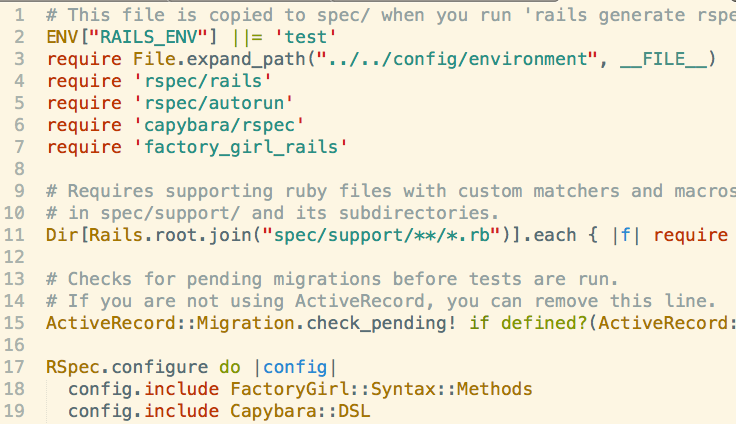
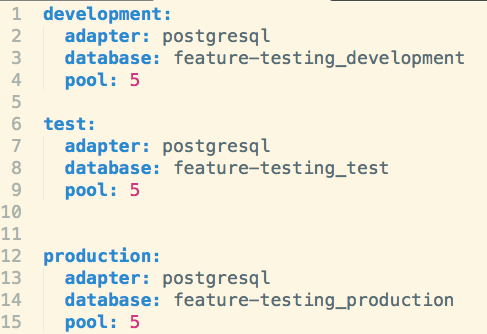
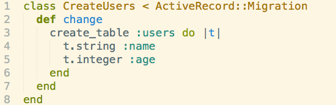
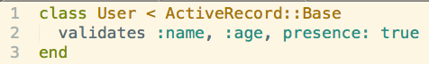
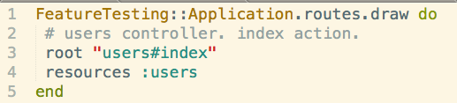
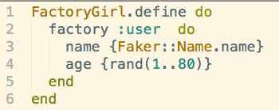

What Is Feature Testing?
Feature testing is using Capybara to test user experience through a web application. Capybara uses its own browser to replicate a user. Use capybara method save_and_open_page in feature tests to debug problems quickly.
Why Feature?
Testing in Rails requires you to think about how long it takes to run a test suite. While feature testing can test all restful routes, it takes much longer than a controller test or model test. For this post, I will run feature tests, but in the future I will break my tests down into controller, model, and feature tests.
Setting up RSpec for Rails
Rails comes bundled with its own version of testing, but I'll use RSpec for feature testing.
The first thing that I run from the console is rails new -T name_of_app. This will create a new rails application without the test folder.
Gemfile
Next I'll setup my gems to allow for Rspec. Make sure to change gem 'sqlite3' to 'pg'
Run rails g rspec:install from shell to create your spec folder and spec_helper.rb
Put require 'capybara/rspec', 'factory_girl_rails' in rspec_helper and change the RSpec.configure
Database
Let's setup the config file for our databases next. Go to database.yml and setup your databases for development, test, and production. Go to config/database.yml and post the following:
After configuring the database, run rake db:create:all to create your databases.
Migrations
run rails g migration name_of_migration and make the table with corresponding columns
Migrate your databases using rake db:migrate (do db:test:clone to setup your test db migrations.)
Models
Now that you have the tables in your database, create the associated models(Remember! ORM!) Models are singularly named! models inherit from ActiveRecord::Base
Routes
The last thing you create before using feature testing to TDD your application are your routes. Navigate to config/routes.rb and make your routes.
Feature Testing TDD
Now here comes the fun part. Lets setup a factory that creates objects we can test. Create a factories folder with the name of your factory.rb(singular!)
